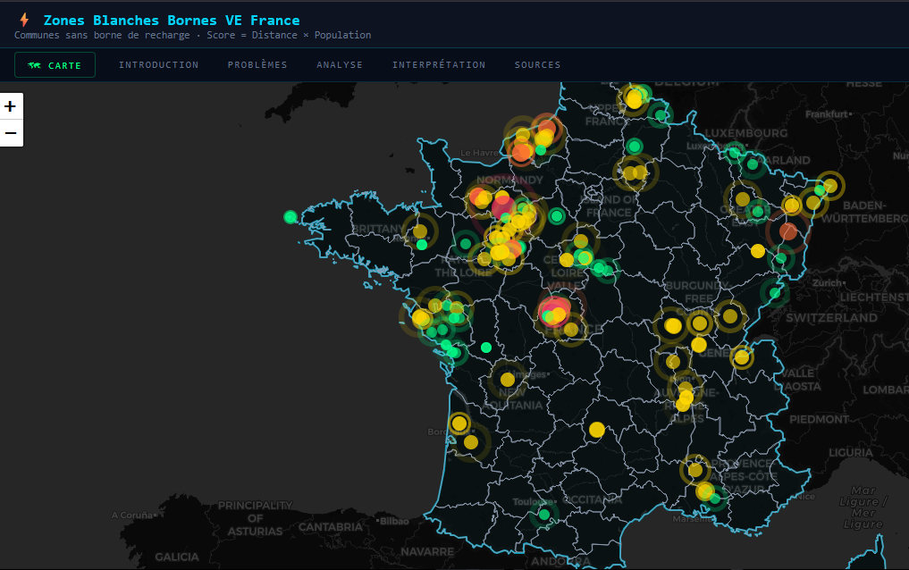
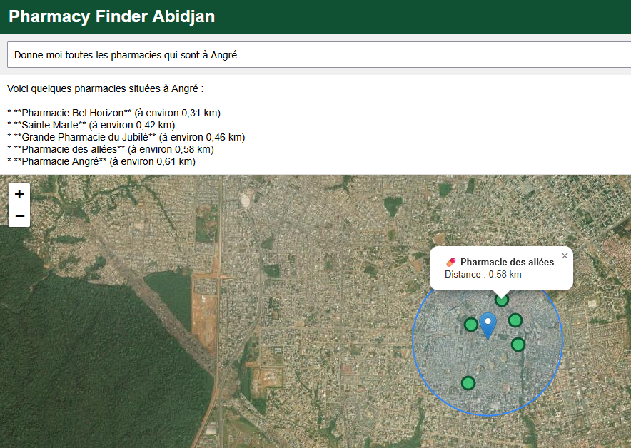
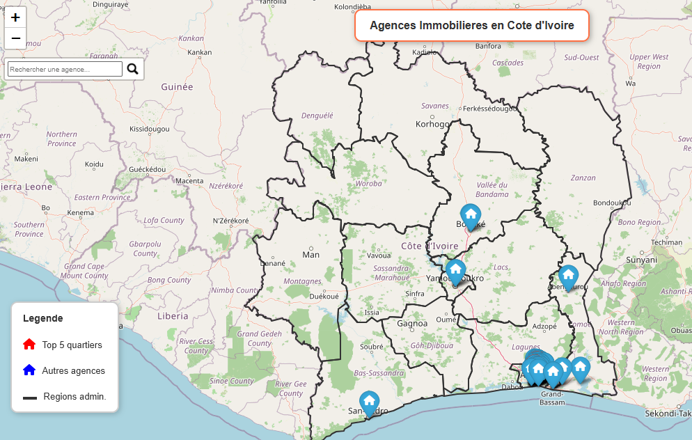
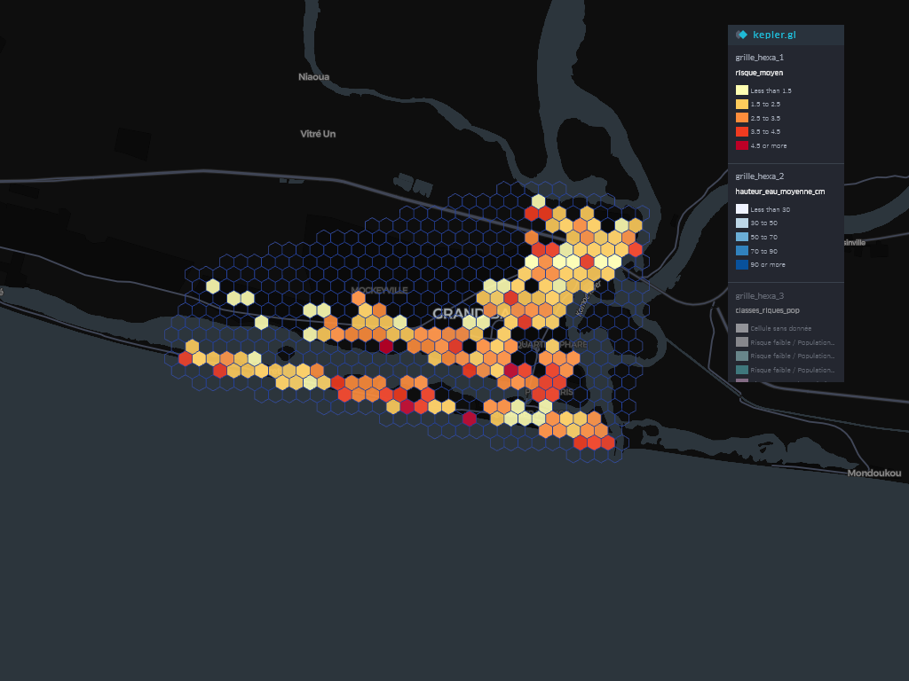
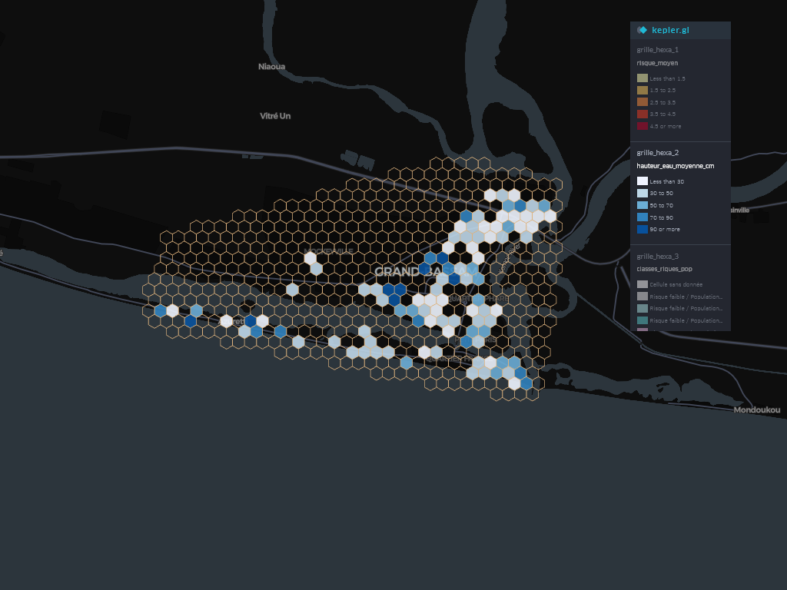
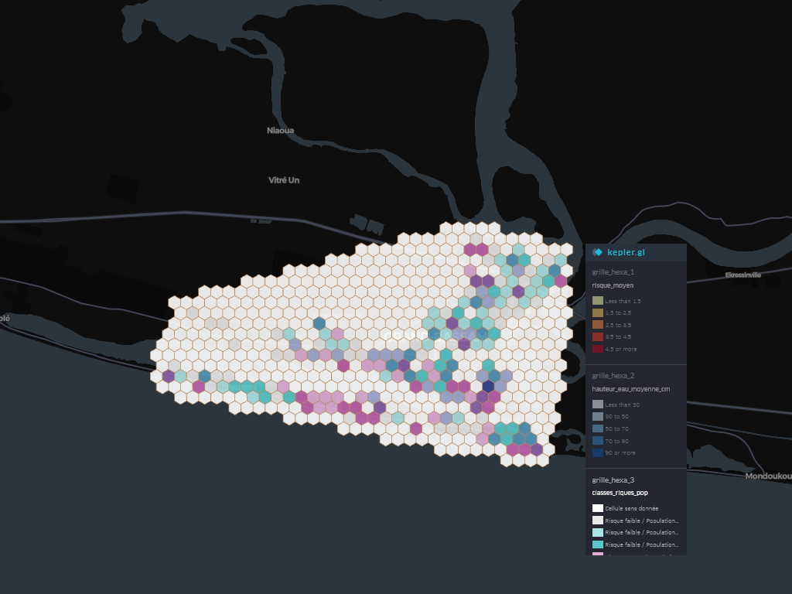
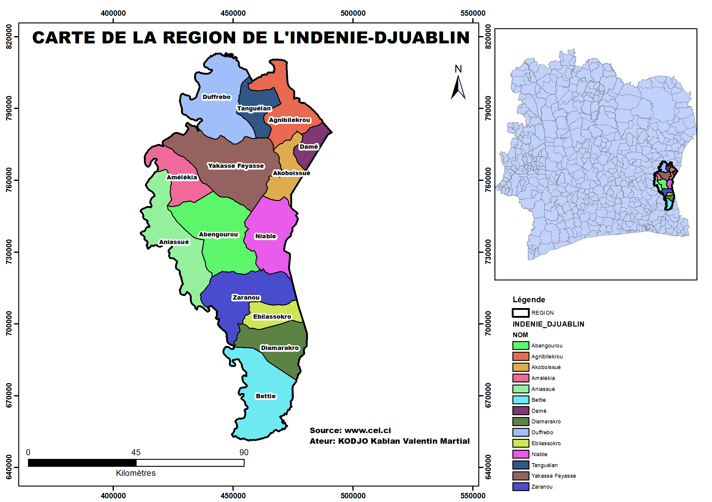
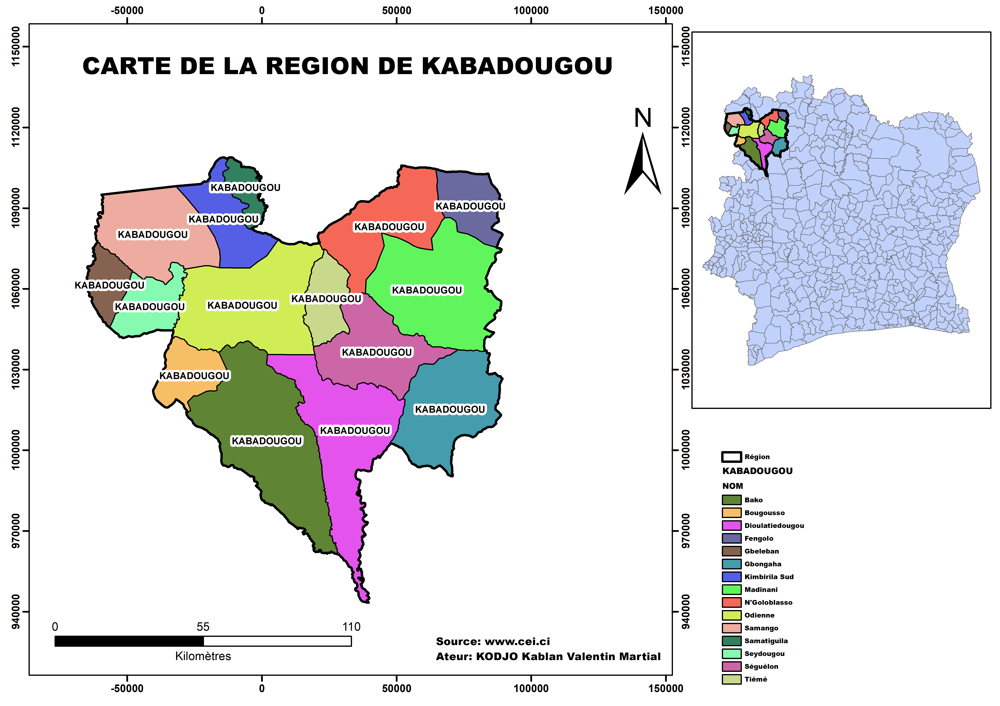
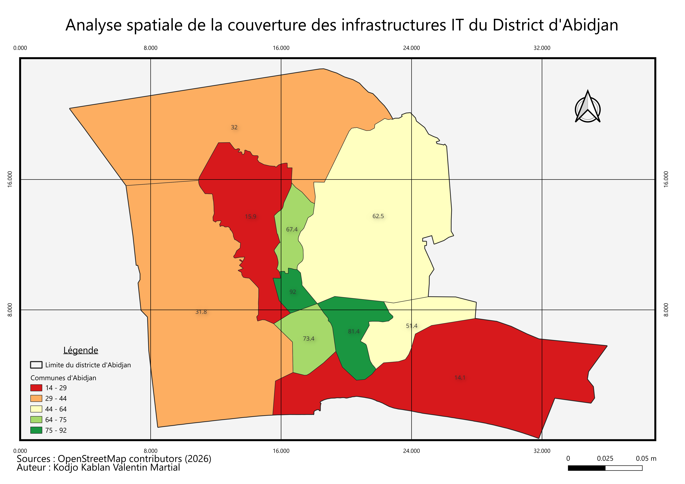

Moi
Qui je suis
Je m'appelle Kodjo Kablan Valentin Martial. Étudiant en dernière année de Licence Professionnelle Géomatique et Stratégies Spatiales à l'Université Félix Houphouët-Boigny, je suis actuellement en stage chez ACTUM DEV en tant que Web GIS Developer / Geospatial Data Scientist. Je conduis en parallèle mes propres projets à travers Orbis Studio, mon espace de travail personnel où je conçois des solutions géospatiales de bout en bout, de la collecte de données à leur restitution sous forme de dashboards interactifs.
Ce que je fais
Je conçois des chaînes de traitement géospatiales complètes : cartographie thématique et hydrographique sous QGIS, traitement d'imagerie satellite (Sentinel-2, SRTM), analyse spatiale (clustering, KPI territoriaux), et développement d'applications web géospatiales (FastAPI, PostGIS, Leaflet, Chart.js). Mon approche privilégie des solutions déployées et fonctionnelles plutôt que de simples démonstrations techniques — chacun de mes projets vise à répondre à un besoin concret, qu'il s'agisse de localisation de pharmacies, de cartographie de risques d'inondation ou de gestion de parc informatique géolocalisé.
Mes centres d'intérêt
Je m'intéresse particulièrement à l'intersection entre géomatique et cybersécurité — un domaine que je désigne sous le terme GeoSecOps/GEOINT. La cryptographie, la stéganographie et l'OSINT font partie de mes sujets d'étude personnels, dans une logique de compréhension globale de la sécurité et de la valeur stratégique de la donnée géospatiale. Je m'intéresse également à la philosophie stoïcienne, qui nourrit ma manière d'aborder le travail et la discipline personnelle.
Ce que je sais faire
Maîtrise de l'écosystème SIG (QGIS, ArcGIS, ENVI), des bases de données spatiales (PostGIS/Supabase), du développement Python appliqué à la data science géospatiale (scikit-learn, DBSCAN, Random Forest), ainsi que du développement web (FastAPI, Leaflet, Chart.js). Je pratique également le déploiement d'infrastructures géospatiales sécurisées via Docker (PostGIS, GeoServer), et j'ai une expérience concrète en durcissement de sécurité (audit ZAP/Nikto, gestion des CVE, chiffrement GPG/VeraCrypt).
Réalisations

Cette carte présente la répartition des différentes classes d'occupation du sol au sein de la commune de Cocody, obtenue par classification supervisée d'images satellites Sentinel-2. L'analyse révèle une nette prédominance des espaces urbanisés (en rouge), qui occupent la majorité de la superficie communale, traduisant une densification urbaine marquée. Le couvert végétal (en vert) subsiste principalement en périphérie et dans les zones résiduelles non bâties, tandis que les surfaces en eau et les sols nus ne représentent qu'une part marginale du territoire, comme le confirme le diagramme circulaire associé. Cette cartographie met en évidence la pression foncière exercée sur les espaces naturels de Cocody et souligne l'intérêt d'un suivi diachronique pour anticiper l'évolution de l'artificialisation des sols dans les années à venir.

Cette carte présente le réseau hydrographique de la commune de Cocody, extrait et vectorisé à partir de données géospatiales sous SIG. Elle met en évidence une densité de drainage particulièrement élevée, avec un maillage de cours d'eau qui structure l'ensemble du territoire communal du nord au sud jusqu'à la lagune Ébrié. Cette configuration hydrographique dense constitue un enjeu majeur pour la gestion des risques d'inondation et l'aménagement urbain, notamment dans un contexte de forte urbanisation où l'imperméabilisation des sols accentue le ruissellement. La délimitation précise du réseau permet d'identifier les zones tampons à préserver et d'orienter les décisions relatives à l'occupation du sol en zones sensibles.

Ce projet cartographique interactif identifie les "zones blanches" de recharge pour véhicules électriques sur le territoire français, c'est-à-dire les communes insuffisamment couvertes en bornes de recharge au regard de leur population et de leur éloignement des infrastructures existantes. La carte croise plusieurs indicateurs score de couverture, distance aux bornes les plus proches et densité de population pour hiérarchiser les zones à prioriser (du vert au rouge selon le niveau de criticité). Cette analyse géospatiale offre un outil d'aide à la décision pour les acteurs publics et privés impliqués dans le déploiement du réseau de recharge, en identifiant objectivement les territoires où l'investissement en infrastructure électrique répondrait le mieux à un besoin réel.

Pharmacy Finder Abidjan est une application web géospatiale permettant de localiser les pharmacies à proximité en langage naturel, grâce à l'intégration d'un modèle conversationnel (function calling) couplé à une base de données PostGIS regroupant 543 pharmacies réelles d'Abidjan issues d'OpenStreetMap. L'utilisateur formule sa requête en langage courant par exemple "donne-moi les pharmacies à Angré" et le système traduit automatiquement cette demande en requête spatiale, calcule les distances et affiche les résultats classés par proximité sur une carte interactive Leaflet. Ce projet illustre concrètement la convergence entre l'intelligence artificielle conversationnelle et l'analyse géospatiale pour répondre à un besoin d'utilité publique immédiat, avec une architecture entièrement déployée (FastAPI/Render, PostGIS/Neon, frontend sur GitHub Pages).

Cette carte interactive recense et hiérarchise les agences immobilières sur l'ensemble du territoire ivoirien, en distinguant les cinq quartiers à plus forte concentration d'agences (marqueurs rouges) des autres implantations recensées (marqueurs bleus), superposés aux limites des régions administratives. Cette approche cartographique permet de visualiser rapidement la répartition spatiale de l'offre immobilière et d'identifier les pôles d'attractivité du marché, concentrés sans surprise autour d'Abidjan et des principaux centres urbains. Un tel outil constitue une aide précieuse pour les acteurs du secteur immobilier souhaitant orienter leur stratégie d'implantation ou pour les particuliers en quête d'agences fiables dans leur zone de recherche.

Cette carte présente une analyse spatiale du risque par maille hexagonale (grille H3) sur la ville de Grand-Bassam, réalisée avec kepler.gl. Chaque hexagone est coloré selon un indice de risque moyen calculé (échelle de moins de 1,9 à plus de 4,8), permettant d'identifier immédiatement les zones les plus exposées, concentrées ici le long de la façade littorale et lagunaire. Ce découpage en grille régulière offre l'avantage de lisser les données ponctuelles hétérogènes en unités spatiales comparables, facilitant la priorisation des zones d'intervention pour les acteurs de la gestion des risques dans cette ville historique et particulièrement vulnérable de par sa position côtière.

Cette seconde couche, superposée sur la même grille hexagonale, cartographie la hauteur d'eau moyenne (en cm) par maille sur Grand-Bassam. Les teintes bleues, plus marquées à l'est du secteur étudié, mettent en évidence les zones où les niveaux d'eau simulés ou mesurés sont les plus élevés une information déterminante pour anticiper les scénarios d'inondation ou de submersion, un risque bien réel pour cette commune régulièrement affectée par l'érosion côtière et les inondations. Cette donnée constitue un facteur clé dans le calcul de l'indice de risque global présenté précédemment, en établissant un lien direct entre l'aléa hydrique et le niveau de risque estimé.

Cette troisième carte croise l'exposition au risque avec la répartition de la population par maille hexagonale à Grand-Bassam, distinguant plusieurs classes selon le niveau de risque combiné à la densité de population exposée. Les zones en teintes vives (violet, turquoise) signalent les secteurs où une population significative se trouve en situation de risque élevé, contrairement aux mailles neutres (blanc/gris) correspondant à une exposition faible ou une population peu dense. Cette approche permet de dépasser la seule cartographie de l'aléa physique pour intégrer la dimension humaine du risque, essentielle à toute stratégie de prévention ciblant les populations les plus vulnérables de cette ville classée au patrimoine mondial de l'UNESCO.

Cartographie de référence des 31 régions administratives ivoiriennes, produite sous QGIS à partir des données officielles CEI. Cette couche de base structure l'ensemble des analyses géospatiales du projet elle sert de socle topologique pour le croisement avec les données électorales, démographiques et d'infrastructure présentées ci-dessous.

Représentation en symboles proportionnels du nombre de bureaux de vote (BV) par région, permettant d'identifier en un coup d'œil la concentration logistique du dispositif électoral. Le District Autonome d'Abidjan se distingue nettement, reflet de la densité démographique et administrative de la capitale économique.

Zoom cartographique sur le découpage sous-régional (départements/sous-préfectures) de l'Indénié-Djuablin, avec carte de localisation intégrée. Ce niveau de détail illustre la capacité à produire des cartes à différentes échelles à partir d'une même base de données, un enjeu clé pour des analyses localisées.

Second exemple de découpage régional détaillé (Nord-Ouest ivoirien), démontrant la reproductibilité de la chaîne de production cartographique sur l'ensemble des 31 régions du pays un gage de cohérence méthodologique et de scalabilité du travail.

Carte choroplète du taux de participation par région, avec classification en 6 classes de dégradé. Ce type de représentation met en évidence les disparités territoriales de mobilisation électorale et illustre une compétence clé en géomatique appliquée aux données socio-politiques au-delà de la simple cartographie administrative.

Analyse spatiale de la densité d'infrastructures IT par commune du District d'Abidjan, à partir de données OpenStreetMap. Cette carte illustre une approche GEOINT appliquée au numérique : identifier les zones sous-équipées ou à forte concentration d'infrastructures pour orienter des décisions de couverture réseau ou de sécurité.